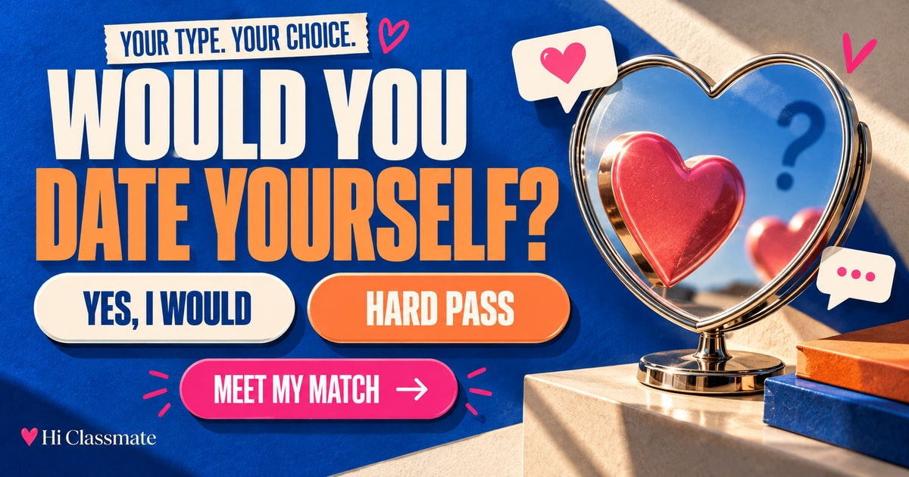

YOUR TYPE. YOUR CHOICE.
Would you
date yourself?
Meet someone with your kind of energy.0 / 8
Your next match.
Be honest.
Eight choices. One person to meet.
Would you say yes?
What do you actually do?
MEET YOUR MATCH
Here’s what they’re like.
Would you date this person?
PLOT TWIST
That person was YOU.
HABITS MATCH YOUR WISHLIST
- Your upside
- Watch for
Show my answers: what I give vs want

Good taste. Interesting habits.
Quick replies or a little suspense? Direct conversations or subtle hints? Your answers cover messages, disagreements, closeness and date plans. Then you meet a match and make one final decision.
A profile built from your choices
Every line in the match profile comes from an answer you selected. Your result compares four habits with your four preferences. The count shows exact matches within these choices; it is not a dating success rate.
The result also highlights an upside and possible friction tied to your answers. Open the answer breakdown to see every comparison and decide what you would keep or change.